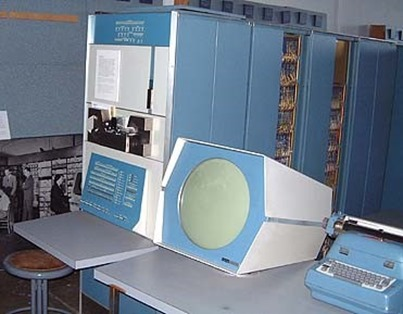
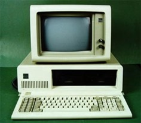
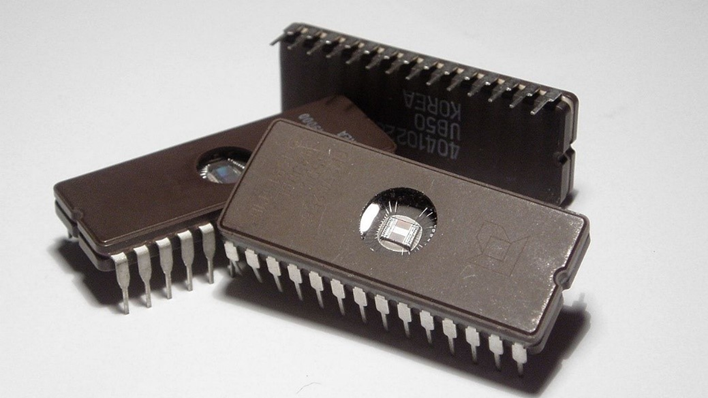
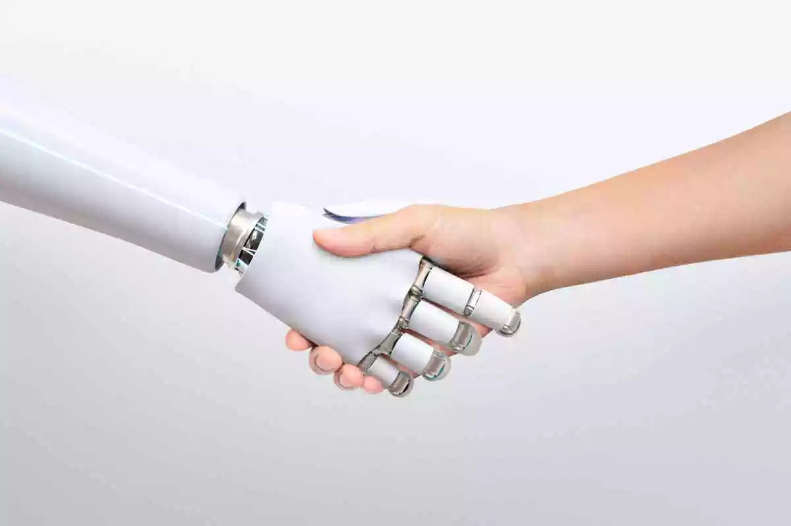

Computador
antigo
Os computadores de mesa eram muito usados entre os anos 1970 e 1990, computadores criados entre a terceira e a quarta geração, com microprocessadores.
Linguagens
É uma linguagem que permite a um programador especificar com precisão a quais dados o computador deverá realizar, como e onde esses dados serão armazenados ou transmitidos e quais ações precisam ser tomadas, pela ampla variedade de linguagens que podem ser usadas para a programação. Exemplos de linguagens de programação, javascript, PHP, Pascal, Python, C#C#, dentre muitas outras opções.

Javascript é uma linguagem de alto nivel e script dinâmico, poucas pessoas tem qualificação em programação Javascript por ser considerado uma linguagem complicada.

A linguagem de programação python é uma linguagem funcional e dinâmica, é usada para aplicações WEB, ciência de dados, machine learning, como muitos outros.
Figuras Importantes
Ao longo dos anos, muitas pessoas marcaram a história da ciência da computação tanto no desenvolvimento de softwares, hardwares e estudos em base da tecnologia, porém alguns nomes de longe são os mais marcantes assim como Alan Turing, John von Neumann e muitos outros. Alguns exemplos de pessoas marcantes dentro da programação são:
• Ada Lovelace - matemática e escritora, conhecida por ter escritoro o primeiro algoritmo.

• Linus Torvalds - desenvolvedor do núcleo Linux
• Mary Kenneth Keller - freira e cientista da programação
Fontes
Em termos técnicos, tipografia, refere-se a determinados tipos de estilos de grafia, No entanto, com a ascensão da escrita digital, escrita esta ideia esta ideia expandiu-se para abranger toda a análise, criação e aplicação de caracteres, estilos, formatos e arranjos visuais de palavras. Expandido para abranger toda análise, criação e aplicação de personagens, estilos, formatos, arranjos visuais de palavras.

Curiosidades
Um termo muito usado dentro e fora da internet e poucos sabemos de onde veio é o termo "bugou", tendo início na primeira geração de computadores, o ENIAC funcionava por meio de válvulas, que era muito sensíveis e estouravam com muita facilidade, mosquitos eram atraídos pelo calor das válvulas e acabavam por pousar em cima delas, fazendo com que elas estourassem, o termo "bugar" veio então de "bug" (inseto).
Primeira Geração (1951-1959)
A primeira geração de computadores foi desenvolvida pela Escola Moore de engenharia elétrica, e programada e desenvolvida por: Frances Bilas e Jean Jenning. A primeira geração de computadores funcionava por meio de circuitos e válvulas eletrônicas. Além de serem grandes e consumirem grande quantidade de energia, distinguiam-se pelo uso restrito. Um bom exemplo é o ENIAC (Integrador Numérico Eletrônico e Computador), que tinha cerca de 19 mil válvulas e consumia cerca de 200 quilowatts de energia.
• Sistema Operacional do ENIAC:
O sistema operacional do ENIAC consistia em cartões perfurados, que eram operados por uma equipe de funcionárias do exército. Esse fato as classifica como as primeiras programadoras registradas na história.
• Válvulas
As válvulas eletrônicas permitiam cálculos milhares de vezes mais rápidos do que os cálculos realizados com os antigos dispositivos eletromecânicos. Esse avanço foi crucial para a trajetória de projetos de computação e tecnologia, permitindo o desenvolvimento de computadores mais potentes e eficientes. Com essa melhoria, foi possível realizar simulações complexas, resolver problemas matemáticos de alta complexidade e acelerar o progresso em diversas áreas ientíficas e industriais. As válvulas eletrônicas abriram caminho para a criação de máquinas que podiam executar tarefas anteriormente impossíveis, transformando a computação em uma ferramenta essencial para o avanço tecnológico e científico.
Segunda Geração (1959-1965)
A segunda geração de computadores, viabilizada pela invenção dos diodos e transistores, aconteceu entre 1959 e 1965. Durante essa época, os tubos de vácuo foram substituídos por transistores, marcando um progresso significativo no âmbito da computação. A transição para a linguagem de programação de montagem é outra característica dos computadores da segunda geração, além da tecnologia e do tamanho reduzido.

• Linguagem Assembly
Uma parte pequena de material semicondutor, como o silício, é o transistor. Sua capacidade de condução de corrente elétrica está entre os materiais condutores e isolantes. Cada transistor possui três terminais, chamados de "emissor", "coletor" e "base", que servem como canais para o fluxo de corrente elétrica.
• Transistor
Uma parte pequena de material semicondutor, como o silício, é o transistor. Sua capacidade de condução de corrente elétrica está entre os materiais condutores e isolantes. Cada transistor possui três terminais, chamados de "emissor", "coletor" e "base", que servem como canais para o fluxo de corrente elétrica.
Terceira Geração (1965-1975)
Os circuitos integrados, que incluíam os transistores, operavam os computadores da terceira geração. As dimensões dos circuitos de processamento eram menores e maiores até esse dado. Durante essa década, os chips foram desenvolvidos e começou a popularização dos PCs pessoais.

• Circuitos integrados
Um componente encontrado em quase todos os dispositivos eletrônicos atuais é o circuito integrado, também conhecido como chip. circuito integrado é um circuito eletrônico funcional que inclui peças minúsculas, incluindo resistores, capacitores, diodos e transistores. Um CI tem a capacidade de detalhar mais de uma função e é capaz de executar uma ampla gama de ações e comandos com alto grau de complexidade devido à quantidade de componentes que podem ser integrados em apenas um único chip.
• Chip Integrado

Quarta Geração - Atualidade
Os computadores estão se tornando mais compactos, velozes e capacitados para processar vastos volumes de dados devido ao avanço da tecnologia da informação. Cada vez mais eficiente é a energia consumida por microprocessadores em desenvolvimento. além disso, softwares evoluiu, a partir da virada do milênio, começaram a aparecer dispositivos portáteis como smartphones, iPods, iPads e tablets que fornecem conectividade móvel e navegação online.
• Microprocessadores
Os microprocessadores e microcontroladores são elementos fundamentais de um computador que projetam inteligência para dispositivos eletrônicos e pessoais. Eles têm algumas características internas e são fabricados com circuitos integrados semicondutores.
• Notebook
Um computador portátil, geralmente conhecido como notebook, laptop ou computador desktop, é um dispositivo pessoal facilmente transportável. A maioria deles é projetada para funcionar como um PC desktop e para executar software e manipular arquivos pesados.
Inteligência Artificial
A área científica da informática conhecida como Inteligência Artificial (IA) está encarregada da criação de sistemas e programas que possuem comportamentos considerados inteligentes. Esses sistemas usam técnicas e algoritmos de aprendizado de máquina para analisar dados, tomar decisões, resolver problemas e ajustar-se a novas situações.
